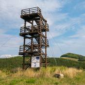

Rozhľadňa Hrajky - pohľady na myjavské kopanice
Rozhľadňa Hrajky je drevenou vyhliadkovou vežou nachádzajúcou sa medzi Sobotišťom a Myjavou v oblasti Turej
lúky. Ak sa pohybujete v týchto končinách, výlet k nej je naozaj nenáročný, pretože až priamo pod ňu sa
pohodlne dopravíte autom. Nachádza sa totiž pri hlavnej ceste medzi uvedenými obcami. Rozhľadňa neponúka
žiadne dychberúce výhľady a predstavuje skôr spríjemnenie a zaujímavú prestávku na vašich cestách týmto
krajom. Z výšky 298m si budete môcť pozrieť oku lahodiaci kopaničiarsky kraj. Samotný objekt rozhľadne
dosahuje výšku 10m.
